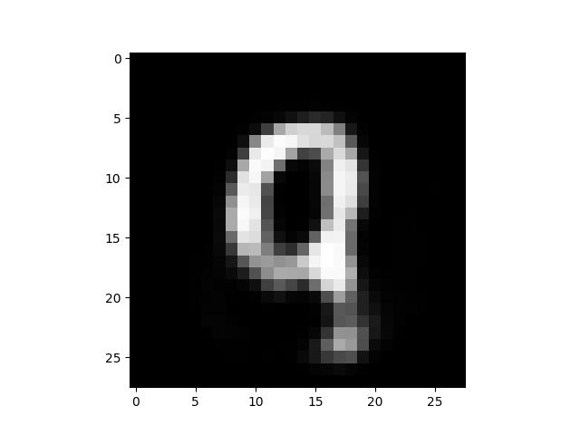

Özkodlama (Autoencoding)
Özkodlamanın yaptığının bir tür "veriyi sıkıştırma" işlemi olduğu söylenebilir. Yapay öğrenmede algoritmaların denetimli ve denetimsiz olarak ikiye ayrıldığından bahsetmiştik, özkodlama denetimsiz çalışır yani ortada etiket yoktur, daha doğrusu özkodlama verinin kendisini etiket olarak kullanır.
Yani girdi olarak verilen veriyi çıktı olarak ta kullanırsak, YSA'yı kendi çıktısını tekrar oluşturmayı öğrenmeye zorlamış oluruz, bu YSA'yı veriyi özetlemeye doğru yöneltecektir, ve bu tekrar oluşturma için ileri besleme sırasında veriyi dar bir noktadan geçmeye zorlarsak (üstteki resimde görülüyor, 7 nöronluk girdi 5 nöronluk "daha dar" bir katmandan geçmeye zorlanıyor), bu YSA'yı "sıkıştırma" yapmaya daha da meyillendirecektir.
from keras.layers import Input, Dense
from keras.models import Model
# gizli katman
encoding_dim = 32
def get_model():
# girdi
input_img = Input(shape=(784,))
# kodlanmis temsil
encoded = Dense(encoding_dim, activation='relu')(input_img)
# kodcozulmus temsil
decoded = Dense(784, activation='sigmoid')(encoded)
# bu model girdiyi tekrar olusturulmus hale cevirir
autoencoder = Model(input_img, decoded)
# bu model girdiyi kodlanmis hale getirir
encoder = Model(input_img, encoded)
encoded_input = Input(shape=(encoding_dim,))
# ozkodlayicinin son tabakasini al bu kodcozulmus katman
decoder_layer = autoencoder.layers[-1]
# kodcozucu model
decoder = Model(encoded_input, decoder_layer(encoded_input))
autoencoder.compile(optimizer='adadelta', loss='binary_crossentropy')
return autoencoder, encoder, decoder
if __name__ == "__main__":
autoencoder, encoder, decoder = get_model()
from keras.datasets import mnist
import numpy as np
(x_train, _), (x_test, _) = mnist.load_data()
x_train = x_train.astype('float32') / 255.
x_test = x_test.astype('float32') / 255.
x_train = x_train.reshape((len(x_train), np.prod(x_train.shape[1:])))
x_test = x_test.reshape((len(x_test), np.prod(x_test.shape[1:])))
print (x_train.shape)
print (x_test.shape)
autoencoder.fit(x_train, x_train,
epochs=50,
batch_size=256,
shuffle=True,
validation_data=(x_test, x_test))
autoencoder.save('mod-autoenc-1.h5')
encoder.save('mod-enc-1.h5')
decoder.save('mod-dec-1.h5')
Üstteki kodla modeli eğittikten sonra herhangi bir sayı resmini alıyoruz, kodluyoruz, kodçözme yapıyoruz ve tekrar oluşturulmuş hali ekrana basıyoruz,
from keras.datasets import mnist
import mnist_autoenc
(x_train, _), (x_test, y_test) = mnist.load_data()
x_test = x_test.astype('float32') / 255.
autoencoder, encoder, decoder = mnist_autoenc.get_model()
encoder.load_weights("mod-enc-1.h5")
decoder.load_weights("mod-dec-1.h5")
idx = 1090 # herhangi bir sayi resmini al
print y_test[idx]
tmp = x_test[idx, :, :].reshape(1,28*28)
encoded = encoder.predict(tmp)
print (encoded.shape)
decoded = decoder.predict(encoded).reshape(28,28)
print (decoded.shape)
plt.imshow(decoded)
plt.gray()
plt.savefig('autoenc_01.png')
9
(1, 32)
(28, 28)

9 resmini elde ettik.
Biraz onceki resmin kodlanmis halini gosterelim,
print (encoded)
[[ 13.18540382 9.90277767 2.81214857 14.67686176 3.90287089
0.95043498 4.25797892 13.59305477 8.71218967 2.61786652
8.67911053 5.27269077 3.68898463 6.26301765 0. 3.73920846
4.90339994 6.61260319 8.80308342 5.41205883 0. 6.12768221
11.42174625 3.13173342 3.79943371 11.27116108 6.003757
10.82552242 8.44533443 4.84582376 5.63021088 11.27607727]]
32 boyutlu bir vektör içinde reel sayılar bunlar. Şimdi bu sayıları alıp başka bir sınıflayıcı içinde kullanabilirdim. Öyle bir uygulama düşünelim ki mesela müşterilerin yaşı, cinsiyeti bilgisi var, biz ayrıca herkesin fotoğrafları üzerinden bir özkodlayıcı eğitiyoruz, ve müşterinin resmi üzerinden elde edilen üstteki gibi bir temsili sıkıştırılmış gizli tabaka verisini yaş, cinsiyet ile beraber bu ayrı sınıflayıcıya verip cevap bekliyoruz. Bu sınıflayıcı "potansiyel yaz alışverişçisi mi / değil mi'' şeklinde bir sınıflama yapıyor olabilir mesela, belki kişilerin resminde bu sınıflayıcıya yardım edecek bir şeyler vardır.. Bu ayrı sınıflayıcı bir YSA olabilir, ama çoğu zaman basit lojistik regresyon bile kullanılabiliyor. Ayrıca sadece bir değil, farklı veriler üzerinde işletilmiş pek çok özkodlayıcıdan gelen özet bilgisini de yan yana aynı lojistik regresyona verebiliriz.
Zaman Serisi Özkodlaması, RNN
Eğer zamana bağlı bir veri yapısını özkodlamak istesek nasıl bir model kullanırdık? Mesela birkaç boyutlu bir finans verisini (bir andaki hisse fiyatı, satım miktarı çok boyutlu bir vektörde olabilirdi) modelliyor olabilidiik. MNIST verisini bu şekilde kullanabiliriz aslında, 28 x 28 boyutlu veride sanki 28 tane 28 boyutlu veriyi zamana bağlı alıyormuşuz gibi görebilirdik, sanki resimde soldan sağa doğru dikey şeritler alıp teker teker bunları işlediğimizi düşünebiliriz. MNIST sayı görüntülerine bu şekilde bakmak aslında çok anlamsız değil, mesela bir altı görüntüsünü düşünürsek soldan sağa giderken kavisli yukarı doğru bir gidiş vardır, bu gidişi zamana bağlı bir NN yakalayabilir.
from keras.layers import Input, Dense, concatenate
from keras.layers import LSTMCell, RNN
from keras.layers import Input, LSTM, RepeatVector
from keras.models import Model
latent_dim = 20; timesteps = 28; input_dim = 28; hist_dim = 5
def get_model():
inputs = Input(shape=(timesteps, input_dim))
encoded = LSTM(latent_dim,return_sequences=True)(inputs)
decoded = encoded
decoded = LSTM(input_dim, return_sequences=True)(decoded)
seq_autoencoder = Model(inputs, decoded)
encoder = Model(inputs, encoded)
return seq_autoencoder, encoder
if __name__ == "__main__":
from keras.datasets import mnist
import numpy as np
(x_train, _), (x_test, _) = mnist.load_data()
x_train = x_train.astype('float32') / 255.
x_test = x_test.astype('float32') / 255.
print (x_train.shape)
print (x_test.shape)
seq_autoencoder, encoder = get_model()
seq_autoencoder.compile(optimizer='adadelta', loss='binary_crossentropy')
seq_autoencoder.fit(x_train, x_train,
epochs=50,
batch_size=256,
shuffle=True,
validation_data=(x_test, x_test))
seq_autoencoder.save('mod-rnn-autoenc-sim.h5')
encoder.save('mod-rnn-enc-sim.h5')
import mnist_autoenc_rnn_simple
seq_autoencoder, encoder = mnist_autoenc_rnn_simple.get_model()
seq_autoencoder.load_weights("mod-rnn-autoenc-sim.h5")
encoder.load_weights("mod-rnn-enc-sim.h5")
decoded = seq_autoencoder.predict(tmp).reshape(28,28)
print (decoded.shape)
plt.imshow(decoded)
plt.gray()
plt.savefig('autoenc_03.png')
Varyasyonel Özkodlayıcılar (Variational Autoencoder -VAE-)
Standard özkodlayıcıların bir problemi kodlama yaptıkları daralmış alandaki vektörlerin sürekli olmayabileceği, ve buradaki değerlerin kolay bir şekilde interpolasyon yapılmasındaki bazı zorluklar.
VAE özkodlayıcılarda, kodlayıcı tabaka bir tamamen bağlanmış / yoğun (dense) bir katmandan geçiyor ama bir değişiklik var; yoğun katman $\mu,\sigma$ rasgele değişkenleri haline geliyor ve ondan bir sonraki katman bu değişkenlerden örneklem alıyor! Bu dahiyene bir düşünce. Fakat akla gelebilir - YSA yapısı deterministik bir yapıdır, örneklem, yani zar atma rasgele (stochastic) bir hesap. Bu kavramı YSA mekanizmasına nasıl dahil ediyoruz?

Çözüm örneklem operasyonunu gürültü, yani Gaussian $N(0,1)$ + $\mu$ çarpı $\sigma$ olarak modellemek, bu şekilde sanki $N(\mu,\sigma)$'dan örneklem alıyoruz, ama eğitilen, optimize edilen çarpma, toplama üzerinden $\mu,\sigma$ değişkenleri, ve halen YSA mekanizması devrede ve bu değişkenler deterministik değişkenler. Gürültü işin içinde var, ama gürültü eh, Gaussian sıfır merkezli bir stardart sapmalı gürültü. Bir gürültü bir diğerinden farklı değil, model için hepsi aynı gürültü.
Üstteki mantığın temelinde şu bilgi var: Biliyoruz ki herhangi bir dağılıma sahip rasgele değişken $z$'yi bir $g$ fonksiyonu kullanarak $X=g(z)$ ile başka bir dağılıma çevirebiliyoruz. Altta örneği görülüyor, soldaki resim Gaussian dağılımdan, sağdaki resim soldaki verilerin $g(z) = z/10 + z/||z||$ ile başka bir dağılıma eşlenmiş hali ve bu yeni dağılım bir çember şeklini oluşturmuş. VAE'nin rasgele dağılımlar yaratabilmesinin arkasında yatan gizem bu işte. Eğitim ile VAE $g$'yi öğrenmiş oluyor, ki bu bir determinstik fonksiyon.
import random, numpy.linalg as lin, pandas as pd
x = np.random.randn(1000,2)
x = pd.DataFrame(x)
x['n'] = np.sqrt(x[0]*x[0] + x[1]*x[1])
x['g0'] = (x[0]/10.0) + x[0]/x['n']
x['g1'] = (x[1]/10.0) + x[1]/x['n']
plt.figure()
ax = plt.subplot(1, 2, 1)
plt.plot(x[0],x[1],'.')
ax = plt.subplot(1, 2, 2)
plt.plot(x['g0'],x['g1'],'.')
plt.xlim(-4,4)
plt.ylim(-4,4)
plt.savefig('autoenc_10.png')
"""
Based on https://github.com/keras-team/keras/blob/master/examples/variational_autoencoder.py
"""
import keras
from keras.datasets import mnist
import numpy as np
from keras import backend as K
from keras.models import Sequential, Model
from keras.layers import Input, LSTM, RepeatVector
from keras.layers.core import Flatten, Dense, Dropout, Lambda
from keras.optimizers import SGD, RMSprop, Adam
from keras import objectives
import numpy as np
timesteps = 28; input_dim = 28;
batch_size = 1
latent_dim = 30
def create_lstm_vae(input_dim,
timesteps,
batch_size,
intermediate_dim,
latent_dim,
epsilon_std=1.):
x = Input(shape=(timesteps, input_dim,))
print (x)
# LSTM encoding
h = LSTM(intermediate_dim)(x)
print (h)
# VAE Z layer
z_mean = Dense(latent_dim)(h)
z_log_sigma = Dense(latent_dim)(h)
def sampling(args):
z_mean, z_log_sigma = args
epsilon = K.random_normal(shape=(batch_size, latent_dim),
mean=0., stddev=epsilon_std)
return z_mean + z_log_sigma * epsilon
z = Lambda(sampling, output_shape=(latent_dim,))([z_mean, z_log_sigma])
print (z)
# decoded LSTM layer
decoder_h = LSTM(intermediate_dim, return_sequences=True)
decoder_mean = LSTM(input_dim, return_sequences=True)
h_decoded = RepeatVector(timesteps)(z)
print (h_decoded)
h_decoded = decoder_h(h_decoded)
print (h_decoded)
# decoded layer
x_decoded_mean = decoder_mean(h_decoded)
print (x_decoded_mean)
# end-to-end autoencoder
vae = Model(x, x_decoded_mean)
# encoder, from inputs to latent space
encoder = Model(x, z_mean)
# generator, from latent space to reconstructed inputs
decoder_input = Input(shape=(latent_dim,))
print (decoder_input)
_h_decoded = RepeatVector(timesteps)(decoder_input)
print (_h_decoded)
_h_decoded = decoder_h(_h_decoded)
print (_h_decoded)
_x_decoded_mean = decoder_mean(_h_decoded)
generator = Model(decoder_input, _x_decoded_mean)
def vae_loss(x, x_decoded_mean):
xent_loss = objectives.mse(x, x_decoded_mean)
kl_loss = - 0.5 * K.mean(1 + z_log_sigma - K.square(z_mean) - K.exp(z_log_sigma))
loss = xent_loss + kl_loss
return loss
vae.compile(optimizer='rmsprop', loss=vae_loss)
return vae, encoder, generator
if __name__ == "__main__":
(x_train, _), (x_test, _) = mnist.load_data()
x_train = x_train.astype('float32') / 255.
#x_train = x_train[:200]
x_test = x_test.astype('float32') / 255.
#x_test = x_test[:200]
print (x_train.shape)
print (x_test.shape)
x = x_train
vae, enc, gen = create_lstm_vae(input_dim,
timesteps=timesteps,
batch_size=batch_size,
intermediate_dim=latent_dim,
latent_dim=latent_dim,
epsilon_std=1.)
vae.fit(x, x, validation_data=(x_test, x_test), epochs=30)
vae.save('mnist_lstm_vae.h5')
enc.save('mnist_lstm_enc.h5')
gen.save('mnist_lstm_gen.h5')
#preds = vae.predict(x, batch_size=batch_size)
import mnist_lstm_vae
vae, enc, gen = mnist_lstm_vae.create_lstm_vae(mnist_lstm_vae.input_dim,
timesteps=mnist_lstm_vae.timesteps,
batch_size=mnist_lstm_vae.batch_size,
intermediate_dim=mnist_lstm_vae.latent_dim,
latent_dim=mnist_lstm_vae.latent_dim,
epsilon_std=1.)
vae.load_weights('mnist_lstm_vae.h5')
enc.load_weights('mnist_lstm_enc.h5')
import random
idx = 400 # herhangi bir imaji sec
print (tmp.shape)
x_test_tmp = x_test[idx]
res = vae.predict(x_test_tmp.reshape((1, 28, 28)))
plt.figure()
ax = plt.subplot(1, 2, 1)
pixels = res.reshape((28, 28))
plt.imshow(pixels)
plt.gray()
ax = plt.subplot(1, 2, 2)
plt.imshow(x_test_tmp)
plt.gray()
plt.savefig('autoenc_04.png')
Gördüğümüz gibi zamansal işlem yaptık ama VAE çok iyi sonuç verdi. Hatta test imajını daha netleştirdi!
Hasımsal Özkodlayıcı (Adverserial Autoencoder -AA-)
Üretici Hasımsal Ağlar (Generative Adverserial Networks -GAN-) kavramının özkodlayıcılara uygulanmış hali AA olur.
Burada bir kodlayıcı / kodçözücü yapısı var (üst blok) bu yapıdan kodlanmış ara tabaka $z \sim q(z)$ "kötü'' örnekler çekilip $p(z)$'den gelen "iyi'' örnekler ile birleştiriliyor ve ayırdedici yine bu iki grup arasında ayırım yapmayı öğreniyor. Bu durumda üst bloktaki kodçözücü GAN'deki üretici gibi olur, ona dönüşür bir bakıma, çünkü öyle iyi üretim yapmaya çalışacaktır ki $p(z)$ gürültüsü ile onun aldığı kodlanmış tabaka verisi ayiredilemez hale gelmelidir. Tabii ki üst soldaki kodlayıcı bu ara tabakaya o şekilde temsili veri üretmeye çalışacaktır, bu arada kodlayıcı / kodçözücü yapısı da eğitilmiş olur. Yani $z$ bir anlamda alt soldaki gerçek gürültüye yaklaşır, bu gürültüden sayı üretebilir hale geliriz, bu klasik GAN, ayrıca bu "kodlanmış'' gürültüyü üreten kodlayıcı / kodçözücü tabaka da ayrı bir şekilde kendini optimize eder ve kodlama işini yapar hale gelir.
# import os
# os.environ["THEANO_FLAGS"] = "mode=FAST_COMPILE,device=cpu,floatX=float32"
# This line allows mpl to run with no DISPLAY defined
from keras.layers import Dense, Reshape, Flatten, Input, merge
from keras.models import Sequential, Model
from keras.optimizers import Adam
from legacy import l1l2
import keras.backend as K
import pandas as pd, os
import numpy as np
from adversarial_model import AdversarialModel
from adversarial_utils import fix_names, n_choice, normal_latent_sampling
from adversarial_optimizers import AdversarialOptimizerSimultaneous
from keras.layers import LeakyReLU, Activation
import numpy as np
from keras.datasets import mnist
def mnist_process(x):
x = x.astype(np.float32) / 255.0
return x
def mnist_data():
(xtrain, ytrain), (xtest, ytest) = mnist.load_data()
return mnist_process(xtrain), mnist_process(xtest)
def model_generator(latent_dim, input_shape,
hidden_dim=512,
reg=lambda: l1l2(1e-7, 0)):
return Sequential([
Dense(hidden_dim, name="generator_h1",
input_dim=latent_dim,
W_regularizer=reg()),
LeakyReLU(0.2),
Dense(hidden_dim,
name="generator_h2",
W_regularizer=reg()),
LeakyReLU(0.2),
Dense(np.prod(input_shape),
name="generator_x_flat",
W_regularizer=reg()),
Activation('sigmoid'),
Reshape(input_shape, name="generator_x")],
name="generator")
def model_encoder(latent_dim, input_shape,
hidden_dim=512,
reg=lambda: l1l2(1e-7, 0)):
x = Input(input_shape, name="x")
h = Flatten()(x)
h = Dense(hidden_dim, name="encoder_h1", W_regularizer=reg())(h)
h = LeakyReLU(0.2)(h)
h = Dense(hidden_dim, name="encoder_h2", W_regularizer=reg())(h)
h = LeakyReLU(0.2)(h)
mu = Dense(latent_dim, name="encoder_mu", W_regularizer=reg())(h)
log_sigma_sq = Dense(latent_dim, name="encoder_log_sigma_sq", W_regularizer=reg())(h)
z = merge([mu, log_sigma_sq], mode=lambda p: p[0] + K.random_normal(K.shape(p[0])) * K.exp(p[1] / 2),
output_shape=lambda p: p[0])
return Model(x, z, name="encoder")
def model_discriminator(latent_dim, output_dim=1, hidden_dim=512,
reg=lambda: l1l2(1e-7, 1e-7)):
z = Input((latent_dim,))
h = z
h = Dense(hidden_dim, name="discriminator_h1", W_regularizer=reg())(h)
h = LeakyReLU(0.2)(h)
h = Dense(hidden_dim, name="discriminator_h2", W_regularizer=reg())(h)
h = LeakyReLU(0.2)(h)
y = Dense(output_dim, name="discriminator_y", activation="sigmoid", W_regularizer=reg())(h)
return Model(z, y)
def train(adversarial_optimizer):
# z \in R^100
latent_dim = 100
# x \in R^{28x28}
input_shape = (28, 28)
# generator (z -> x)
generator = model_generator(latent_dim, input_shape)
# encoder (x ->z)
encoder = model_encoder(latent_dim, input_shape)
# autoencoder (x -> x')
autoencoder = Model(encoder.inputs, generator(encoder(encoder.inputs)))
# discriminator (z -> y)
discriminator = model_discriminator(latent_dim)
# assemple AAE
x = encoder.inputs[0]
z = encoder(x)
xpred = generator(z)
zreal = normal_latent_sampling((latent_dim,))(x)
yreal = discriminator(zreal)
yfake = discriminator(z)
aae = Model(x, fix_names([xpred, yfake, yreal], ["xpred", "yfake", "yreal"]))
# print summary of models
generator.summary()
encoder.summary()
discriminator.summary()
autoencoder.summary()
# build adversarial model
generative_params = generator.trainable_weights + encoder.trainable_weights
model = AdversarialModel(base_model=aae,
player_params=[generative_params, discriminator.trainable_weights],
player_names=["generator", "discriminator"])
model.adversarial_compile(adversarial_optimizer=adversarial_optimizer,
player_optimizers=[Adam(1e-4, decay=1e-4), Adam(1e-3, decay=1e-4)],
loss={"yfake": "binary_crossentropy", "yreal": "binary_crossentropy",
"xpred": "mean_squared_error"},
player_compile_kwargs=[{"loss_weights": {"yfake": 1e-2, "yreal": 1e-2, "xpred": 1}}] * 2)
# load mnist data
xtrain, xtest = mnist_data()
# callback for image grid of generated samples
def generator_sampler():
zsamples = np.random.normal(size=(10 * 10, latent_dim))
return generator.predict(zsamples).reshape((10, 10, 28, 28))
# callback for image grid of autoencoded samples
def autoencoder_sampler():
xsamples = n_choice(xtest, 10)
xrep = np.repeat(xsamples, 9, axis=0)
xgen = autoencoder.predict(xrep).reshape((10, 9, 28, 28))
xsamples = xsamples.reshape((10, 1, 28, 28))
samples = np.concatenate((xsamples, xgen), axis=1)
return samples
# train network
# generator, discriminator; pred, yfake, yreal
n = xtrain.shape[0]
y = [xtrain, np.ones((n, 1)), np.zeros((n, 1)), xtrain, np.zeros((n, 1)), np.ones((n, 1))]
ntest = xtest.shape[0]
ytest = [xtest, np.ones((ntest, 1)), np.zeros((ntest, 1)), xtest, np.zeros((ntest, 1)), np.ones((ntest, 1))]
history = model.fit(x=xtrain, y=y, validation_data=(xtest, ytest), nb_epoch=100, batch_size=32)
# save model
encoder.save("aae-norm-encoder.h5")
generator.save("aae-norm-generator.h5")
discriminator.save("aae-norm-discriminator.h5")
if __name__ == "__main__":
train(AdversarialOptimizerSimultaneous())
import aae_normal
latent_dim = 100
input_shape = (28, 28)
encoder = aae_normal.model_encoder(latent_dim, input_shape)
encoder.load_weights('aae-norm-encoder.h5')
generator = aae_normal.model_generator(latent_dim, input_shape)
generator.load_weights('aae-norm-generator.h5')
idx = 100 # herhangi bir imaji sec
print (x_test[idx, :].shape)
res = encoder.predict(x_test[idx, :].reshape(1,28,28))
print (res.shape)
pixels = generator.predict(res)
pixels = pixels.reshape((28, 28))
plt.imshow(pixels)
plt.gray()
plt.savefig('autoenc_05.png')
# import os
# os.environ["THEANO_FLAGS"] = "mode=FAST_COMPILE,device=cpu,floatX=float32"
# This line allows mpl to run with no DISPLAY defined
from keras.layers import Dense, Reshape, Flatten, Input, merge
from keras.models import Sequential, Model
from keras.optimizers import Adam
from legacy import l1l2
import keras.backend as K
from keras.datasets import mnist
import numpy as np, os, pandas as pd
from adversarial_model import AdversarialModel
from adversarial_utils import fix_names, n_choice, normal_latent_sampling
from adversarial_optimizers import AdversarialOptimizerSimultaneous
from keras.layers import LeakyReLU, Activation, LSTM, GRU, RepeatVector
def mnist_process(x):
x = x.astype(np.float32) / 255.0
return x
def mnist_data():
(xtrain, ytrain), (xtest, ytest) = mnist.load_data()
return mnist_process(xtrain), mnist_process(xtest)
activation='relu'
def model_generator(latent_dim, input_shape,
hidden_dim=100,
reg=lambda: l1l2(1e-7, 0)):
return Sequential([
Dense(np.prod(input_shape), activation=activation,
name="generator_h1", input_dim=latent_dim,
W_regularizer=reg()),
Reshape(input_shape, name="generator_x"),
GRU(latent_dim,return_sequences=True),
GRU(28,return_sequences=True),
],
name="generator")
def model_encoder(latent_dim, input_shape,
hidden_dim=100,
reg=lambda: l1l2(1e-7, 0)):
x = Input(input_shape, name="x")
h = GRU(hidden_dim, return_sequences=True)(x)
h = GRU(hidden_dim)(h)
h = Dense(hidden_dim, activation=activation,
name="encoder_h3",
W_regularizer=reg())(h)
mu = Dense(latent_dim, name="encoder_mu", W_regularizer=reg())(h)
log_sigma_sq = Dense(latent_dim, name="encoder_log_sigma_sq",
W_regularizer=reg())(h)
z = merge([mu, log_sigma_sq],
mode=lambda p: p[0] + K.random_normal(K.shape(p[0])) * K.exp(p[1] / 2),
output_shape=lambda p: p[0])
return Model(x, z, name="encoder")
def model_discriminator(latent_dim, output_dim=1, hidden_dim=100,
reg=lambda: l1l2(1e-7, 1e-7)):
z = Input((latent_dim,))
h = z
h = Dense(hidden_dim, name="discriminator_h1", W_regularizer=reg())(h)
h = LeakyReLU(0.2)(h)
h = Dense(hidden_dim, name="discriminator_h2", W_regularizer=reg())(h)
h = LeakyReLU(0.2)(h)
y = Dense(output_dim, name="discriminator_y", activation="sigmoid", W_regularizer=reg())(h)
return Model(z, y)
def example_aae(adversarial_optimizer):
# z \in R^100
latent_dim = 200
# x \in R^{28x28}
input_shape = (28, 28)
# generator (z -> x)
generator = model_generator(latent_dim, input_shape)
# encoder (x ->z)
encoder = model_encoder(latent_dim, input_shape)
# autoencoder (x -> x')
print (encoder.inputs)
e = encoder(encoder.inputs)
g = generator(e)
autoencoder = Model(encoder.inputs, g)
# discriminator (z -> y)
discriminator = model_discriminator(latent_dim)
# assemple AAE
x = encoder.inputs[0]
z = encoder(x)
xpred = generator(z)
zreal = normal_latent_sampling((latent_dim,))(x)
yreal = discriminator(zreal)
yfake = discriminator(z)
aae = Model(x, fix_names([xpred, yfake, yreal], ["xpred", "yfake", "yreal"]))
# print summary of models
generator.summary()
encoder.summary()
discriminator.summary()
autoencoder.summary()
# build adversarial model
generative_params = generator.trainable_weights + encoder.trainable_weights
model = AdversarialModel(base_model=aae,
player_params=[generative_params, discriminator.trainable_weights],
player_names=["generator", "discriminator"])
model.adversarial_compile(adversarial_optimizer=adversarial_optimizer,
player_optimizers=[Adam(1e-4, decay=1e-4), Adam(1e-3, decay=1e-4)],
loss={"yfake": "binary_crossentropy", "yreal": "binary_crossentropy",
"xpred": "mean_squared_error"},
player_compile_kwargs=[{"loss_weights": {"yfake": 1e-2, "yreal": 1e-2, "xpred": 1}}] * 2)
# load mnist data
xtrain, xtest = mnist_data()
# callback for image grid of generated samples
def generator_sampler():
zsamples = np.random.normal(size=(10 * 10, latent_dim))
return generator.predict(zsamples).reshape((10, 10, 28, 28))
# callback for image grid of autoencoded samples
def autoencoder_sampler():
xsamples = n_choice(xtest, 10)
xrep = np.repeat(xsamples, 9, axis=0)
xgen = autoencoder.predict(xrep).reshape((10, 9, 28, 28))
xsamples = xsamples.reshape((10, 1, 28, 28))
samples = np.concatenate((xsamples, xgen), axis=1)
return samples
# train network
# generator, discriminator; pred, yfake, yreal
n = xtrain.shape[0]
y = [xtrain, np.ones((n, 1)), np.zeros((n, 1)), xtrain, np.zeros((n, 1)), np.ones((n, 1))]
ntest = xtest.shape[0]
ytest = [xtest, np.ones((ntest, 1)), np.zeros((ntest, 1)), xtest, np.zeros((ntest, 1)), np.ones((ntest, 1))]
history = model.fit(x=xtrain, y=y, validation_data=(xtest, ytest), nb_epoch=50, batch_size=32)
# save model
encoder.save("aae-lstm-encoder.h5")
generator.save("aae-lstm-generator.h5")
discriminator.save("aae-lstm-discriminator.h5")
if __name__ == "__main__":
example_aae(AdversarialOptimizerSimultaneous())
import aae_lstm
latent_dim = 200
input_shape = (28, 28)
encoder = aae_lstm.model_encoder(latent_dim, input_shape)
encoder.load_weights('aae-lstm-encoder.h5')
generator = aae_lstm.model_generator(latent_dim, input_shape)
generator.load_weights('aae-lstm-generator.h5')
idx = 1030 # herhangi bir imaji sec
res = encoder.predict(x_test[idx, :].reshape(1, 28,28))
pixels = generator.predict(res)
pixels = pixels.reshape((28, 28))
plt.imshow(pixels)
plt.gray()
plt.savefig('autoenc_08.png')
Kaynaklar
[1] https://blog.keras.io/building-autoencoders-in-keras.html
[2] Adverserial Autoencoder Keras, https://github.com/bstriner/keras-adversarial/blob/master/examples/example_aae.py
[3] https://towardsdatascience.com/intuitively-understanding-variational-autoencoders-1bfe67eb5daf
[4] https://hsaghir.github.io/data_science/denoising-vs-variational-autoencoder/
[5] Doersch, Tutorial on Variational Autoencoders, https://arxiv.org/pdf/1606.05908.pdf
[6] Goodfellow, Adversarial Autoencoders, https://arxiv.org/pdf/1511.05644.pdf
[7] What is Adversarial Autoencoder?, https://www.quora.com/What-is-Adversarial-Autoencoder
[8] http://www.inference.vc/adversarial-autoencoders/
Yukarı